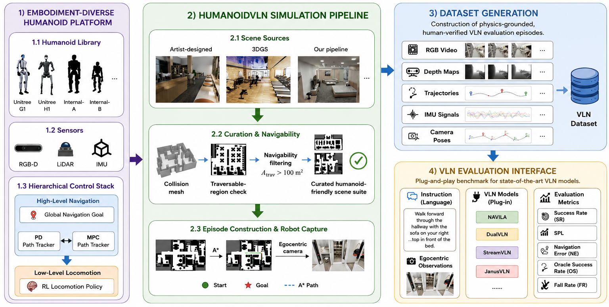
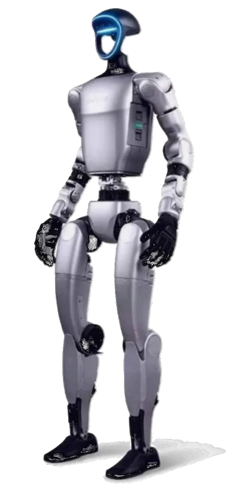
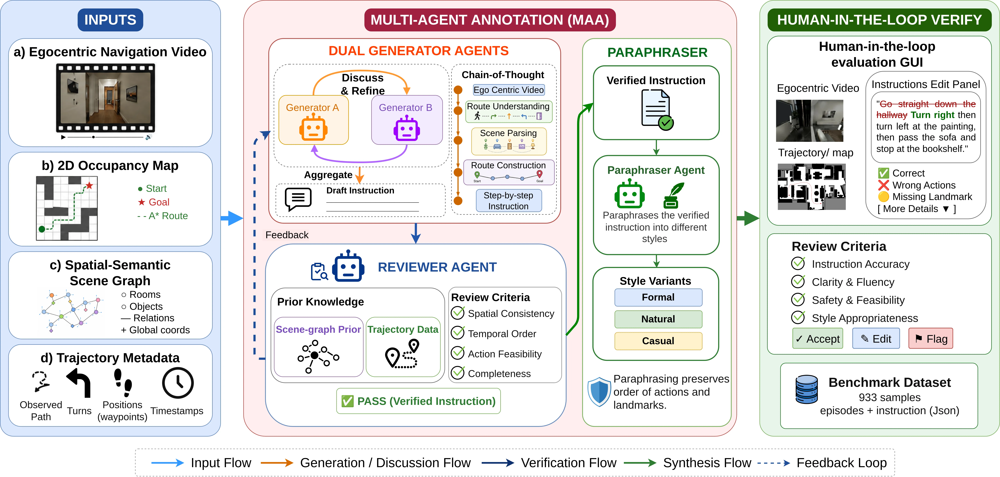

Language in, stable bipedal walking out — evaluated under real physics, not teleportation.
Anonymous Institution · Under double-blind review
Existing VLN benchmarks move robots by kinematic teleportation, place them in scenes bipeds can't traverse, and pair videos with hallucination-prone automated instructions. HumanoidVLN closes all three gaps at once.
Vision-language navigation (VLN) has largely been studied on abstracted mobile agents, leaving a wide sim-to-real gap for humanoid robots, whose gait stability, joint limits, and center-of-mass dynamics fundamentally change what a feasible trajectory is. HumanoidVLN is a physics-grounded simulator and benchmark built on NVIDIA Isaac Sim that evaluates VLN under authentic bipedal embodiment.
The platform supports four humanoid configurations spanning 10–12 lower-body DoF and 1.20–1.80 m in height, each driven by a hierarchical control stack: an RL policy generates stable low-level gaits while PD or MPC trackers follow global plans. Scenes are curated from artist-designed environments, 3D Gaussian Splatting reconstructions, and robot-captured image streams — all with more than 100 m² of navigable area. Navigation instructions are produced by a Dual Generator-Reviewer + Paraphraser multi-agent system with human-in-the-loop verification, yielding annotations that are scalable, linguistically diverse, and physically consistent with the executed trajectories.
Habitat-style simulators slide robots through space kinematically, bypassing every physical constraint that makes bipedal walking hard. No existing VLN simulator models humanoid embodiment diversity.
Our answer: an Isaac Sim platform where an RL policy commands joint torques and PD/MPC trackers follow the plan — every trajectory is physically executed by the specific morphology under test.
Benchmarks scale scene count, not navigability. Narrow doorways and dense furniture create bottlenecks that a wide-stepping, upright humanoid simply cannot pass.
Our answer: scenes curated for >100 m² of traversable floor from GRScenes and SAGE-3D, plus a 3DGS pipeline that reconstructs scenes directly from a walking robot's own camera.
Automated instruction pipelines confuse left with right and misalign time; manual annotation is reliable but doesn't scale. And idealized renders miss the camera shake of a real walking robot.
Our answer: egocentric video recorded from the walking simulator, described by a Generator–Reviewer–Paraphraser agent loop, then verified by human annotators.
Every embodiment loads interchangeably into identical environments, so navigation performance can be compared across morphologies under controlled conditions.


A compact 12-DoF platform. Shorter limbs shift the center of mass lower, changing step reachability and the gait the RL policy converges to — exactly the kind of embodiment variation the benchmark isolates.
Converts the global navigation plan into velocity and heading references. Both tracker variants are interchangeable, so tracker fidelity itself becomes an experimental variable.
Commands joint torques directly, producing stable bipedal gaits that respect per-morphology joint limits and center-of-mass dynamics.
Trajectory following subject to real contact dynamics — with the camera shake and lighting variation of an actual walking robot recorded into the dataset.
Two complementary scene sources, one admission criterion: a humanoid must actually be able to walk there.
Physically realistic, artist-authored indoor environments — filtered down to layouts with wide, obstacle-sparse corridors a biped can pass.
Photorealistic 3DGS reconstructions with collision meshes extracted via unbiased depth rendering, depth-normal consistency, and TSDF fusion.
The Dual Generator-Reviewer + Paraphraser multi-agent system replaces single-pass VLM generation with an iterative loop of drafting, spatial verification against the scene graph, and stylistic synthesis — then a human takes the final pass.

Takes the chronological egocentric frames and spatial prior, performs route understanding (turn and transition detection) and landmark mining, and drafts a step-by-step instruction in second-person imperative voice.
Cross-checks the draft against a rigid spatial-semantic scene graph from simulator metadata and the observed trajectory data. Physically implausible relations trigger a correction, and the loop repeats until the text is spatially and temporally consistent.
Rewrites the verified instruction into diverse linguistic styles — formal, natural, casual — without altering the grounding facts. Action order and landmark order are hard constraints.
Human annotators correct residual errors and flag edge cases — the scalability of automation with the reliability of manual annotation, without its full cost.
Detailed step-by-step guidance: explicit turns, passed landmarks, and side-of-path locations.
Each episode ships as structured JSON: landmarks[]
route_summary fine coarse
No existing benchmark jointly delivers humanoid embodiment diversity, navigability-curated scenes, and verified instruction generation.
| Dataset | Simulator | Humanoid | DoF range | Scene source | Instruction | Action space |
|---|---|---|---|---|---|---|
| R2R (2018) | Matterport3D | — | — | A | Human | Graph |
| RxR (2020) | Matterport3D | — | — | A | Human | Graph |
| REVERIE (2020) | Matterport3D | — | — | A | Human | Graph |
| VLN-CE (2020) | Habitat | — | — | A | Human | Discrete |
| ALFRED (2020) | AI2-THOR | — | — | A | Human | Discrete |
| AerialVLN (2023) | AirSim | — | — | A | Human | Discrete |
| LH-VLN (2025) | Habitat | — | — | A | VLM | Graph |
| GSA-R2R (2025) | Habitat | — | — | GS | VLM | Graph |
| VLN-PE (2025) | Isaac | — | — | A | VLM | Hybrid |
| VLNVerse (2025) | Isaac | — | — | A | VLM | Hybrid |
| HumanoidVLN (Ours, 2026) | Isaac (Humanoid) | ✓ | 10–12 | A + GS | MAA + Human | Hybrid |
Scene source — A: artist-designed · GS: 3D Gaussian Splatting reconstruction Instruction — Human: manual annotation · VLM: automated generation · MAA + Human: Dual Generator-Reviewer + Paraphraser multi-agent annotation with human-in-the-loop verification.
Share of episodes where the agent stops within a threshold distance of the target.
Average distance between the agent's stopping position and the goal.
Trajectory efficiency — success discounted by how far the agent wandered.
Path fidelity — how closely the agent adhered to the instructed route.
Measures a robot's maximum capability to reach a destination, assuming it makes the perfect decision about when to stop.
The fraction of steps in which the robot is detected to have fallen, measuring locomotion stability under physical execution.